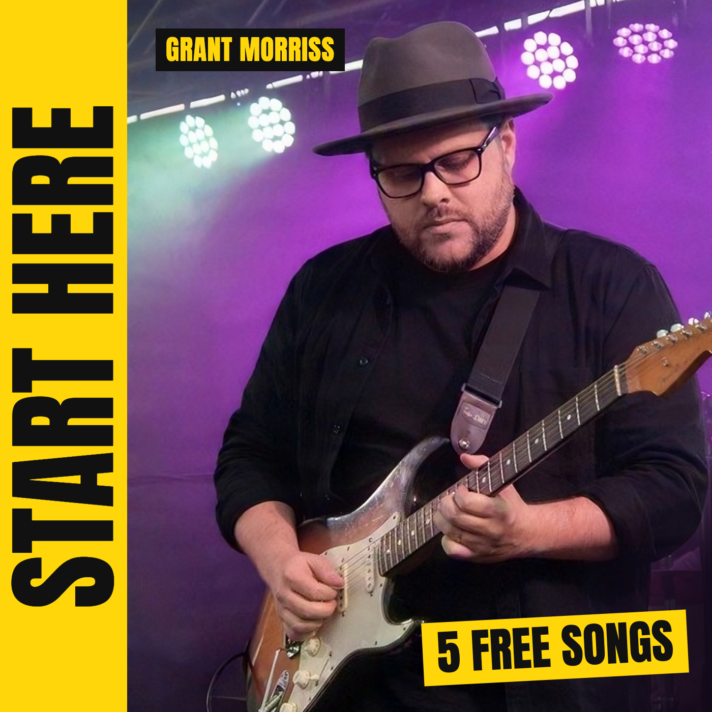
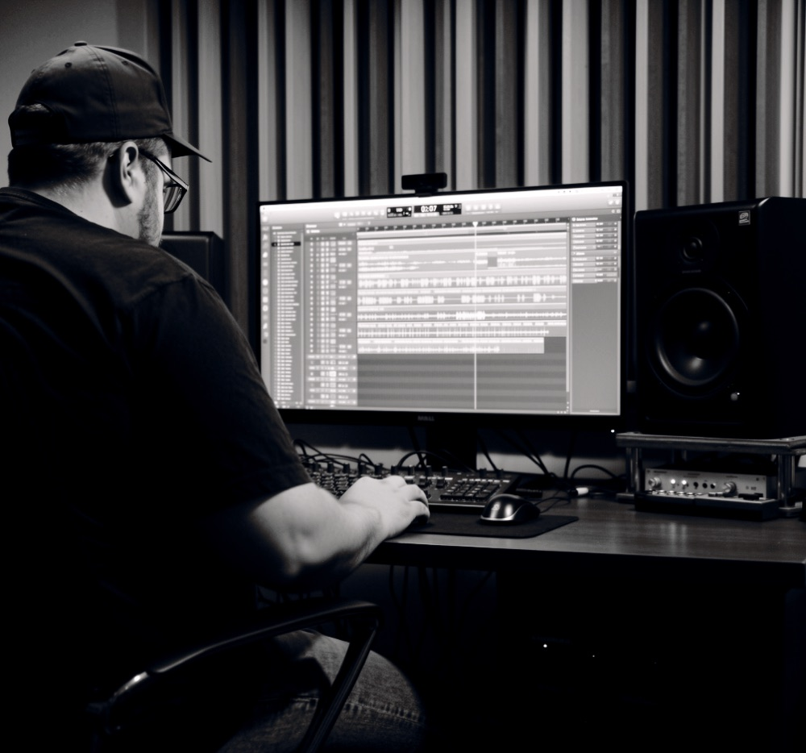
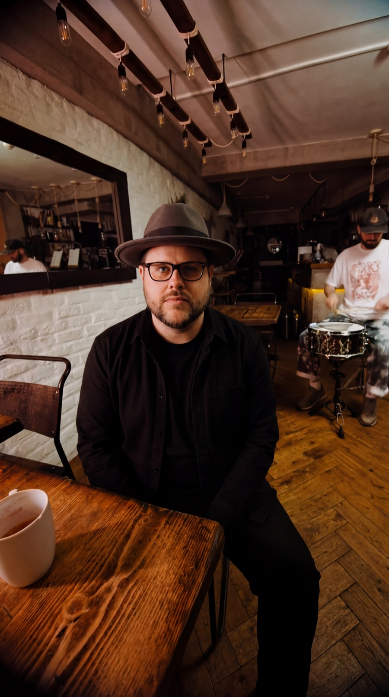
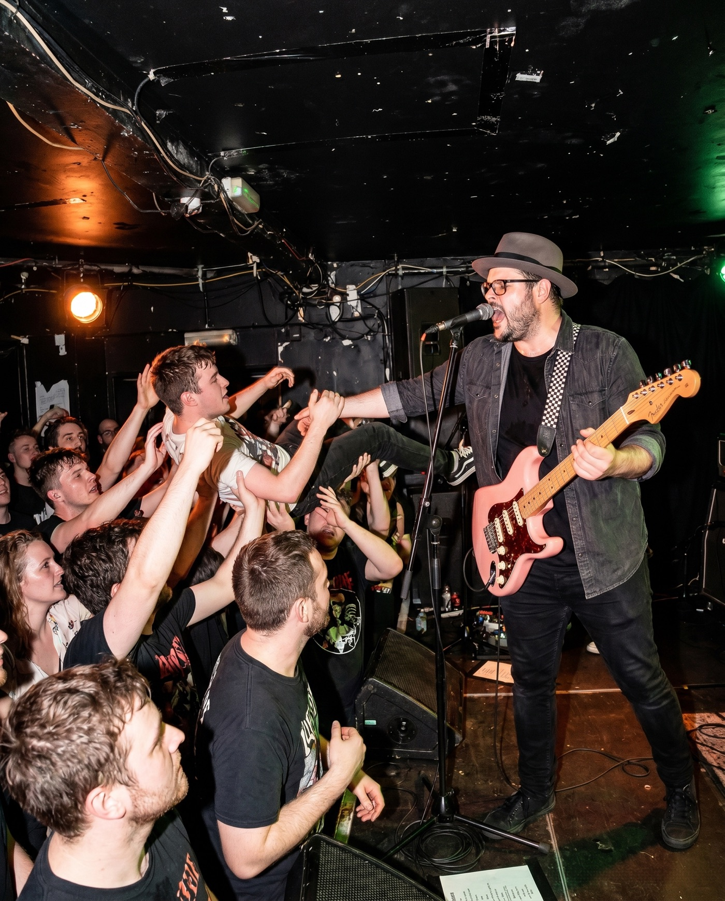

GRANT MORRISS / POP PUNK & 2000s ALT ROCK
Songs for
people who never
grew out of it.
44. Dad. Proper job. Loud guitars. Pop punk and 2000s alt rock, written, played and recorded by one bloke in a spare room.
Join the mailing list. Get 5 free MP3s to download.
GRANT MORRISS NEVER GREW OUT OF IT
Infectious, energetic and upbeat.BBC Radio Manchester Added to Spotify’s RADAR UK & Ireland: Next GenWorlds Collide
A high-voltage collision of 2000s emo nostalgia and modern grit.The Gatekeeper Space

FREE MUSIC / START HERE
Five songs.
Yours to
keep.
Sign up to the mailing list and get 5 free MP3s to download. Pop punk and 2000s alt rock for people who never grew out of it.
- Included
- Five songs
- Format
- MP3 downloads
- Cost
- Free when you join the mailing list
01 / THE MUSIC
Start here.
Five songs to get you started.



02 / THE PERSON BEHIND THE SONGS
The long
way
round.
UK-born. Raised on records. Still chasing the feeling of finding the right song at exactly the right time.
My earliest music memory is getting the bus into town with my saved-up pocket money to go CD hunting. The first one I remember buying was Mansun’s Attack of the Grey Lantern. Then came Nevermind, Bleed American and From Under the Cork Tree, and I never really recovered.
These days I’m a dad with a proper job. I write, play and record everything myself in a spare room. The songs are personal, a bit autobiographical and occasionally surreal. Loud guitars, big hooks, and the belief that feelings sound better turned up.
Hear the music on Spotify

03 / LIVE
Until next time.
Had a fab time on tour in 2026 with shows across the Middle East and Asia Pacific in summer 2026.
Now resting until we go again! Check back for more info soon.
04 / STORIES & SUPPORT
Behind the songs.
Personal stories about making music in your 40s, building an independent artist project and the strange events behind the songs.
Read on Medium ↗ The Gatekeeper Space A High-Voltage Collision of 2000s Emo Nostalgia and Modern GritA review of “The Bit That Breaks”, covering its pop-punk urgency, emo vulnerability and modern alternative-rock production.
Read review ↗ Click Roll Boom Comes in Threes — Single ReviewA dedicated Click Roll Boom review of the Grant Morriss single “Comes in Threes”.
Read review ↗
05 / KEEP IN TOUCH